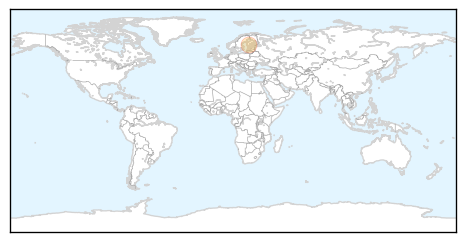
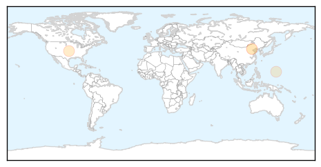
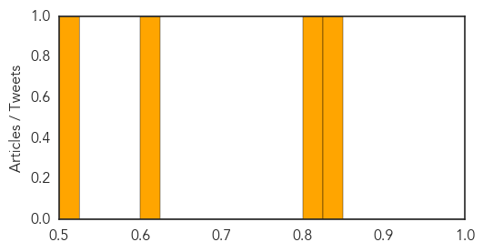

Measles
30-Day Web Trend
1 alerts, 0 warnings

30-Day Twitter Trend
0 alerts, 0 warnings

Article Locations
Article Confidences

Top Articles:
Top Tweets:
-
No tweets found for Oct 15, 2015
Hepatitis
30-Day Web Trend
4 alerts, 4 warnings

30-Day Twitter Trend
0 alerts, 0 warnings

Article Locations
Article Confidences
Top Articles:
- 0.831
- More than half of SGH patients 'exposed to hepatitis C' test negative, no new cases, news, Health News, AsiaOne YourHealth
- 0.819
- Did mass media suppress SGH Hepatitis infection news for PAP political expediency?
- 0.621
- Pfizer Receives Complete Response Letter from FDA for Oral XELJANZ® (tofacitinib citrate) Supplemental New Drug Application for Moderate to Severe Chronic Plaque Psoriasis
- 0.504
- Viral hepatitis in Pacific a chief WHO concern
Top Tweets:
-
No tweets found for Oct 15, 2015